solo/arrow-horizontal-with-two-open-heads
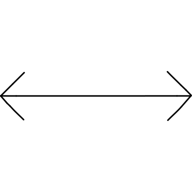
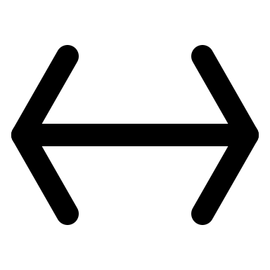
Steep narrow arrowheads distort the 45-degree open heads in the source. Rebalance as matched 45-degree heads.
Reduction: None
SVG · RESULT_DIR20 SOLO48 revisions · AUTHOR gpt-6 · valid with zero warnings · upload gate passed. Each claim had one disapproval and no written feedback.


Steep narrow arrowheads distort the 45-degree open heads in the source. Rebalance as matched 45-degree heads.
Reduction: None
SVG · RESULT_DIR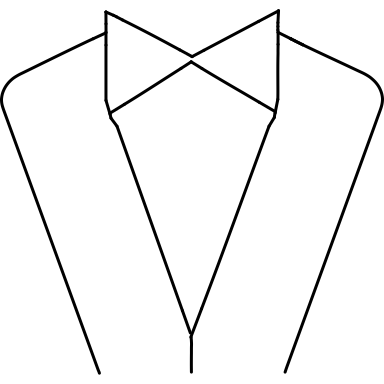
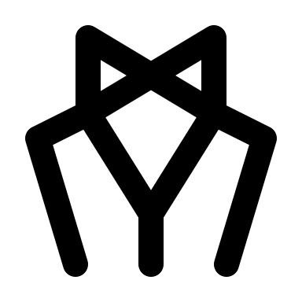
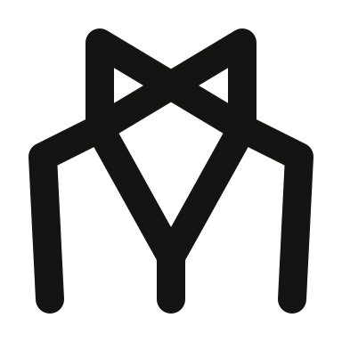
Short lapels and tiny bow openings weaken the tuxedo; lengthen the V and broaden bow.
Reduction: None
SVG · RESULT_DIR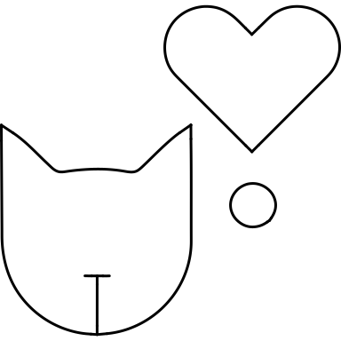
Rejected drawing omits the heart and thought mark entirely. Restore heart above a compact cat head.
Reduction: Thought dot and tiny nose omitted to prioritize the cat/heart composition.
SVG · RESULT_DIR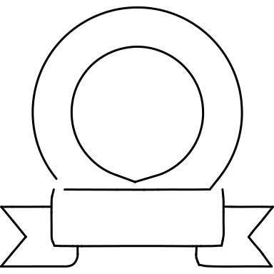
Circular emblem reduced to a narrow arch with banner across its middle. Restore circular medallion above a low banner.
Reduction: Tiny folded banner tabs omitted.
SVG · RESULT_DIR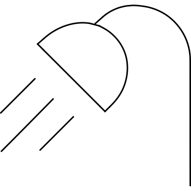
Head is bulky and jets shrink unevenly. Use a clean diagonal dome and equal parallel jets.
Reduction: Three jets reduced to two equal jets to keep clear spacing.
SVG · RESULT_DIR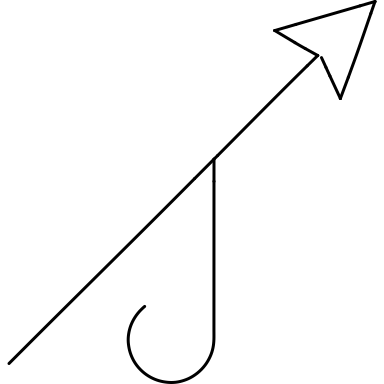
Hook is too short and closes against shaft; restore long downward hook and more distinct barb.
Reduction: None
SVG · RESULT_DIR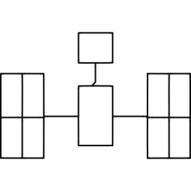
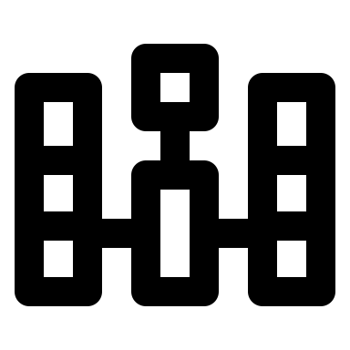
Dense three-cell wings and low links obscure the airy horizontal panel arrangement. Restore two-cell wings and central alignment.
Reduction: Each wing reduced from four source cells to two.
SVG · RESULT_DIR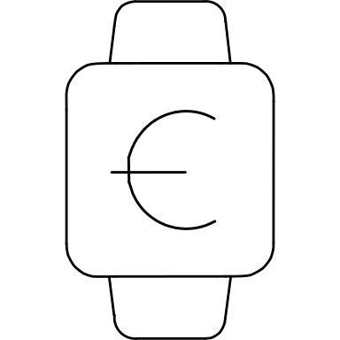
Blank watch removes the euro symbol; restore its C-shaped curve and crossbar on a larger square face.
Reduction: Straps reduced to central strokes; single-bar euro follows source.
SVG · RESULT_DIR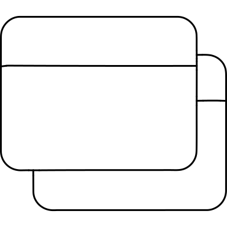
Rear window disconnected at bottom left and reads as a bracket. Restore a visibly overlapping rounded rear window.
Reduction: None
SVG · RESULT_DIR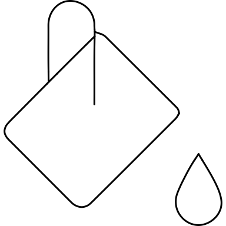
Tiny diamond body and squat drop lose the large pouring bucket. Enlarge and soften bucket silhouette.
Reduction: None
SVG · RESULT_DIR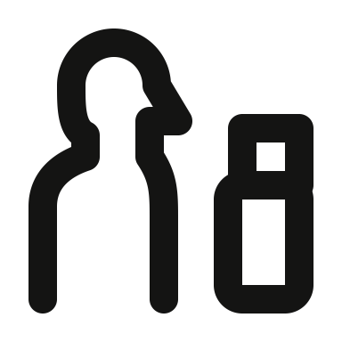
Stick figure replaces source profile bust; restore head/neck/shoulder profile beside suitcase.
Reduction: Bust profile retained; sleeve seam omitted. Continuous anatomical neck, no detached head gap.
SVG · RESULT_DIR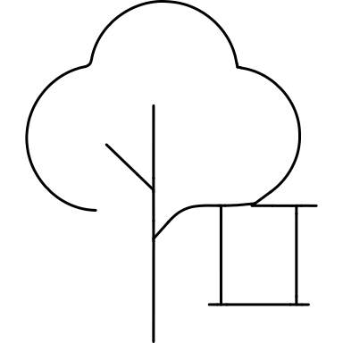
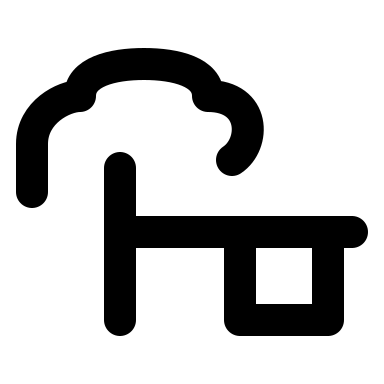
Open hooked canopy no longer reads as a tree. Restore a full leafy canopy and suspended seat.
Reduction: Minor trunk twigs omitted; swing ropes retained.
SVG · RESULT_DIR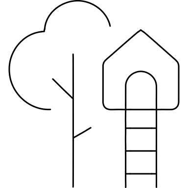
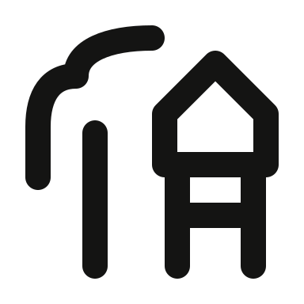
Tree reduced to a pole with one hook; restore a leafy canopy around the left trunk.
Reduction: House doorway omitted; two ladder rails and one rung retained.
SVG · RESULT_DIR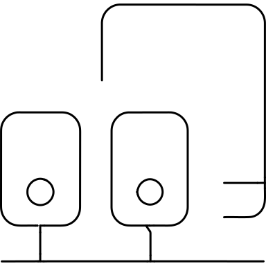
Sensors stacked vertically instead of side by side in front of tablet; restore source arrangement.
Reduction: Tiny circular sensor buttons omitted; shared bus retained.
SVG · RESULT_DIR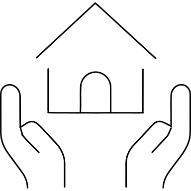
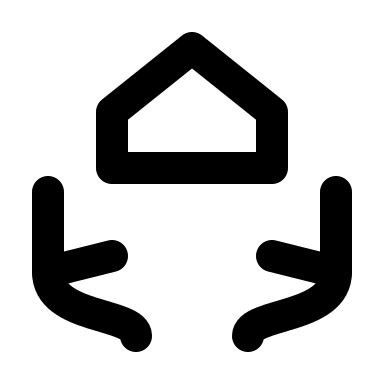
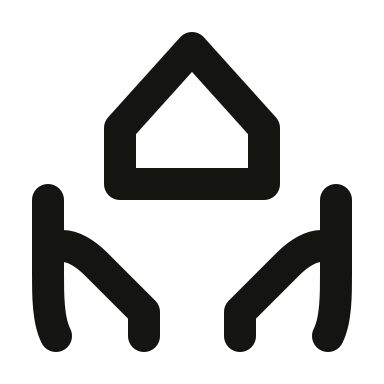
Single strokes read like twigs rather than hands; restore rounded finger-and-palm contours around house.
Reduction: Door omitted to allow clear hand silhouettes.
SVG · RESULT_DIR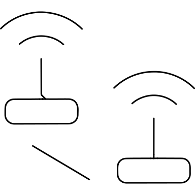
Wireless arcs omitted; boxes read as wired devices. Restore a radio arc above each diagonal router.
Reduction: One radio arc per router; link remains detached as in source.
SVG · RESULT_DIR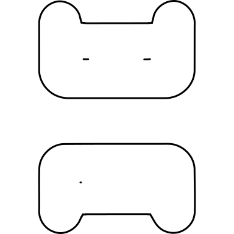
Extreme inward notches make controllers look like handles; flatten notches and deepen bodies.
Reduction: Tiny control dots omitted.
SVG · RESULT_DIR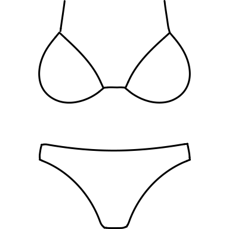
Sharp low-rise bottom and angular cups differ from rounded fabric shapes; soften curves and deepen bottom.
Reduction: None
SVG · RESULT_DIRSuitcase lost its marking and tiny solid wheels; restore one clear case mark and hollow wheels.
Reduction: Two source case marks reduced to one; wheel circles use approved small-circle size.
SVG · RESULT_DIR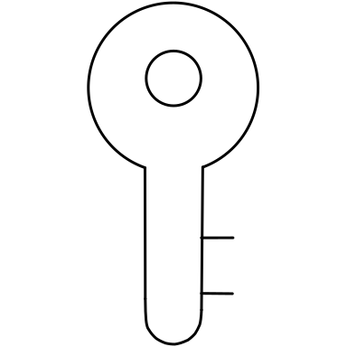
Long teeth and solid stem read as an F; restore outlined shaft integrated with bow and shorter teeth.
Reduction: None
SVG · RESULT_DIR